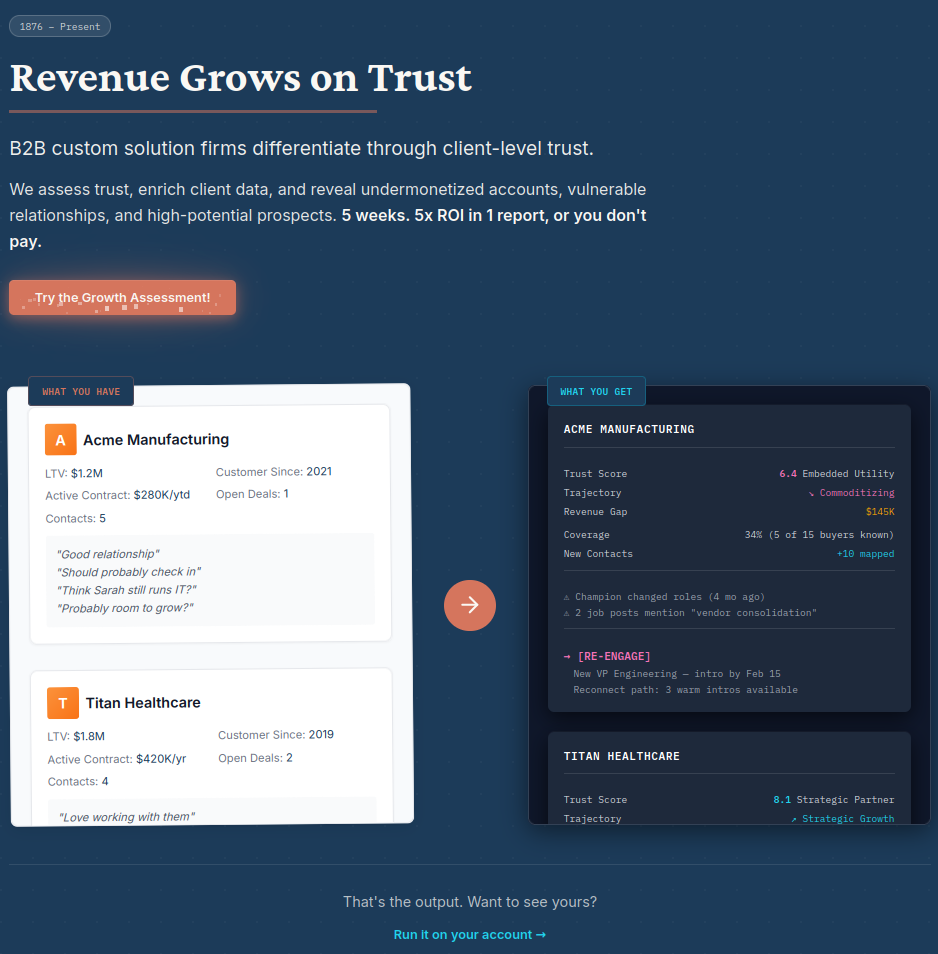
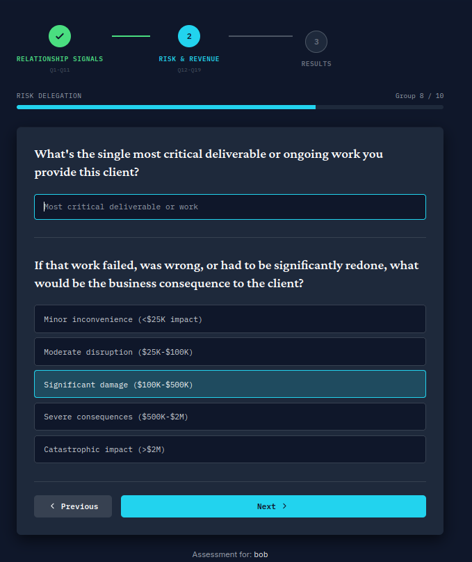
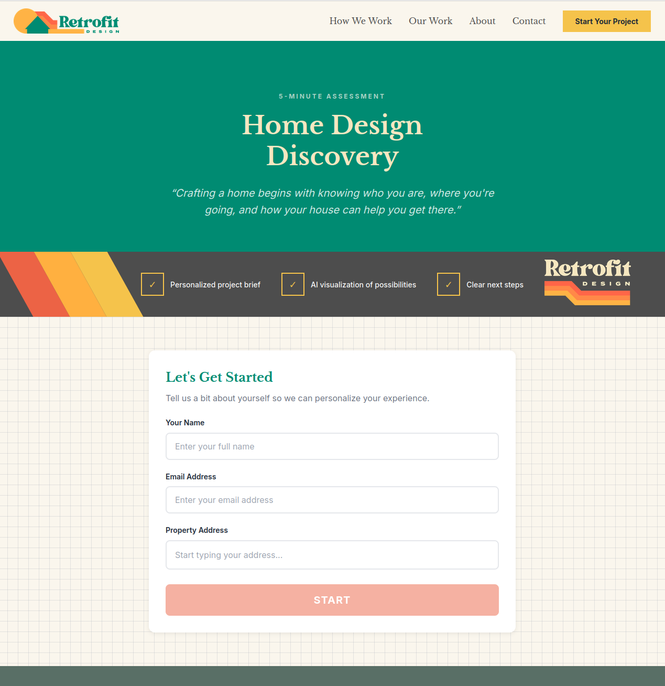
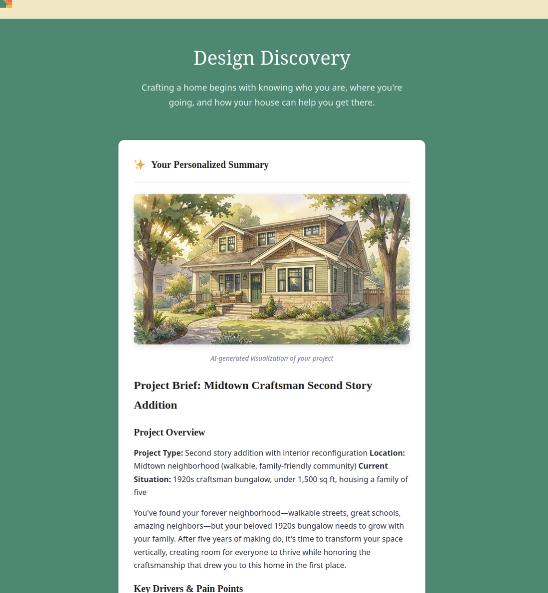
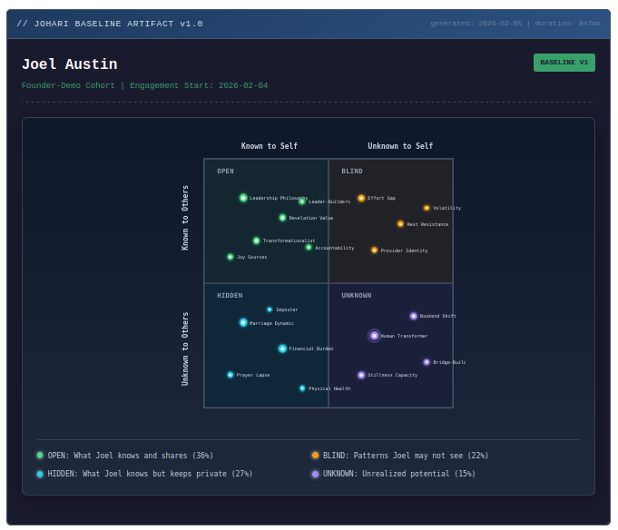
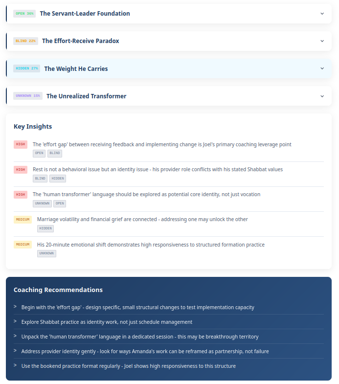

AI-Enabled Client Experiences
See It In Action → Your expertise, their experience.“A professional services firm’s growth, margins, and capacity are all constrained by the same thing: humans synthesizing complex client inputs and applying them to proprietary knowledge and methodology. Until very recently, encoding this into processes has been infeasible. That assumption is no longer true.”
— Joel Austin, Founder
Scaling client knowledge no longer depends on adding consulting hours. Give your clients experiences that externalize your methodologies, collect valuable data and context, and rapidly deliver formatted gaps, perspectives, inspiration, or the next human touchpoint. All invoked with your custom intuitive logic.
Your senior consultant gets promoted from note taker and slide formatter to context orchestrator.
This isn’t a fancy UI. An agentic client experience has three compounding outcomes:
An agentic form scales client knowledge across the firm. Context becomes interoperable across multiple deals and buyers within the same account. More context means better positioning and higher close rates.
Agentic forms let users self-segment, qualify, educate, and answer questions they didn’t know to ask. This collapses the number of human-to-human turns and the latency between them. The sales cycle collapses with it.
An agentic form is just as much an internal tool and client asset as it is a top-of-funnel lead magnet. Your methodology, available to an agent, positioned wherever you need it.
Tech agencies build software. We encode how professional services firms grow.
Our approach maps two disciplines:
That operational depth is what makes our solutions work. We study how your firm thinks. We help draw the line between deterministic logic and creative judgment, and engineer a system that runs everything on one side of that line so your people can amplify the other, and deliver stronger, more human-centric solutions.
We’re a boutique agency. Small team, high touch, long partnerships. We build, we manage, we optimize. We stay in the work because the work keeps compounding.


Account health assessment for relationship-dependent recurring revenue


Presale vision generator for homeowner prospects


Personalized leadership assessment with custom development plan generation
Take our Trust Assessment — the same kind of agentic form we build for our clients. Five minutes. Your data. Your gaps. Your next steps.
Take the Assessment → Five minutes. Completely free. No sales call.